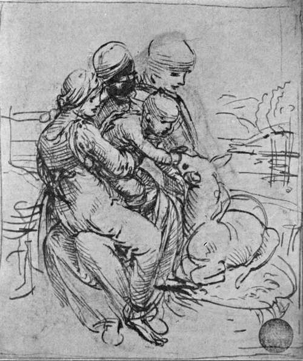
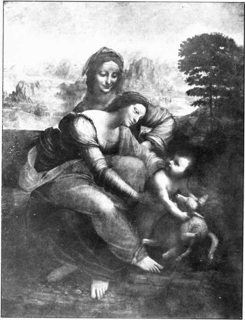

The Pictures. Part 11
Description
This section is from the book "Leonardo Da Vinci", by Edward McCurdy. Also available from Amazon: Leonardo Da Vinci.
The Pictures. Part 11
With this drawing as index of his power, the contrast pointed out by Dr. Richter with the pastel in the Brera for the head of Christ becomes luminous. The latter in its present state is none of his, whatever its inception may have been, and of that it is impossible to judge. A drawing in red chalk at Windsor, which I believe to be a study for S. James the Greater, is discussed in treating of the studies for the Anghiari combatants, with which it has been connected.
Of the painting itself it is hard to dissever what is still from what once was. The vitality of what is left is so potent that the imagination will perforce attempt to reconstruct. The space composition is simple. The side walls seen in the picture continue the walls of the refectory, so that the long table at which the figures are sitting is intended to have the effect of being in the room. The Apostles on either side of Christ are drawn together into groups of three. Natural action has completely veiled the method of the arrangement, its result being to avoid the formalism of his prototypes and to isolate the figure of Christ. The latter effect is heightened by the fact that in what is apparently the end wall of the refectory Leonardo has represented three windows opening out on a landscape of hill and meadow, and in the central window the head of Christ is aureoled in light. The arched cornice above and the moulding round it give it something of the appearance of an altar-piece. The calm serenity of the Christ is in expressive contrast to the action of the Apostles, of which only Goethe has succeeded in transfusing into words some measure of the intensity.
Plate 36. Study For The "Virgin And Child With S. Anne"
Alinariphoto - Accademia, Venice
Dramatic and inevitable is his interpretation of Philip's look, as if saying " Lord, I am not he. Thou knowest it, thou seest my pure heart,-I am not he!"; and of James the Greater as " drawing back in terror with arms spread out, and gazing with head bent down, like one who already imagines that he sees before him the horror that he hears "; or his instancing the convulsive movement of the left arm of Judas as an index of his terror when Peter, who leans across to urge John to ask who is the traitor, touches his side with the haft of a knife which he is holding.
These are not a poet's imaginings. Goethe's attitude is rather that of the scientific observer.
It has been repainted so often that it is impossible that there can be an inch that has not been covered by the brush of the restorer. But surely some of the later work has proved the less durable, has melted like snow from off the face of the deep!
Despite all the threnodies as to its condition, it is more than a mere ruin. How much more is in part evident by the comparison with the copies of it made by Solario and Marco d'Oggionno which are now in the Refectory.
It still shows greater freedom in execution. The im-pressiveness, far transcending theirs, is not entirely a matter of suggestion or association.
The colour can give no indication of the original. But where may be found in the art of Italy previous to this a more perfect plastic treatment of the human form than is still perceptible to have been that of James the Greater, starting back in horror with hands flung out as though to beat away the thought from him ? Where else, save in Leonardo's own works, do we find hands so wrought to be a palpable index to the spirit as in the hands of Peter, the left hand of Christ, the left hand of Matthew, and the hands of Simon?
The gesture is inevitable. It is the issue of the action depicted, and his representation of it is so free, so exact, as to make all his preceding work seem almost tentative by contrast.
The Last Supper first revealed the plenitude of Leonardo's power, and still reveals it, imperfectly, yet as fully as any existing work save the Mona Lisa. So supreme is the art that its structure does not intervene at all between the thought and its translation.
The Last Supper was painted with an oil medium; the choice being no doubt partly due to the enhanced subtilty of effect which it offered, partly to the fact that the urgency imposed by the conditions of painting in fresco would have been utterly alien to his methods.
Plate 37. Virgin And Child With S. Anne
The Louvre
It is impossible to say how far its rapid deterioration has been due to the damp of its situation, and how far to error in the composition of the ground surface. There is, however, very little room for doubt that, as in the case of the Anghiari picture, Leonardo's experimental chemistry proved an ill friend to the durability of his own works.
He obtained his surface, according to Goethe, first by a mixture of mastic, pitch, and other ingredients laid on to the plaster of the wall with a hot iron, the whole being then covered by a thin coating of white lead mixed with fine yellow argillaceous earth, which latter covering proved its undoing; for it remained intact only for so long as the colours laid on contained sufficient nourishment to feed it; as the oil dried up the surface cracked, and the moisture of the wall then forced its way through.
The date of the occurrence may be confined within a narrow compass. Paolo Giovio, writing in 1527, says, " in admiratione tamen est Mediolani in pariete Christus cum discipulis discumbens." It would follow that in 1527 it was practically intact. It was seen in 1556 by G. B. Armenino,1 who refers to it in his work, "Dei veri Precetti della Pittura" (1587), as although half ruined,8 yet seeming a miracle in the manner it represented the expression of the Apostles. Vasari, in referring to a copy made by Fra Gerolamo Monsignori, speaks of himself as " having seen this year, 1566, in Milan, the original by Leonardo, in such bad condition that one can distinguish nothing more than a confused blur."1
1 Uzielli (1896), p. 243.
2 " Abbenche fosse fino d'allora mezzo guasto."
Continue to:
Tags
leonardo da vinci, pictures, drawings, galleries, statues, da vinci